Цена реставрации кресла
При оценке кресла учитываем деревянный каркас, состояние резьбы, пружины, наполнитель и лицевую ткань. По общему виду цену можно назвать только предварительно.

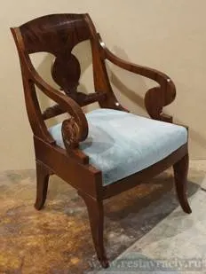
Из чего сделано кресло
В примере 1830-х годов под шпоном махагони толщиной 3 мм находится дубовая основа. Для резьбы использовали массив красного дерева, для сиденья — морскую траву, для отделки — шеллак.
Для кресла русского классицизма с полумягким съёмным сиденьем мастерская в этом материале приводит ориентир 40 000 ₽. Стоимость для другого кресла зависит от сохранности и объёма ремонта.
Данные мастерской
| Вид кресла | Замена ткани | Текущий ремонт и обновление лака. | Реставрация антикварных кресел с высокой степенью разрушения |
|---|---|---|---|
| Жесткое, деревянное | 20 т.р. | от 25 т.р. | |
| Полумягкое. С резной деревянной спинкой | 4-6 т.р. | 25 т.р. | от 30 т.р. |
| Мягкое, кутаное, кожаное, будуарное | 5-7 т.р. | 35 т.р. | от 40 т.р. |
| Кресло в стиле ампир, классицизм, историзм. Золоченое, с бронзой, росписью. | 3-5 т.р.* | 40 т.р. | Договорная |
О чём рассказывает мастерская
- Реставрация антикварных кресел и его цена…
Фотографии и детали


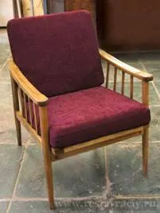
Открыть снимок у мастерской

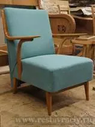
Открыть снимок у мастерской

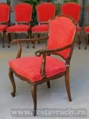
Открыть снимок у мастерской

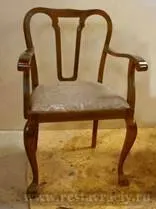
Открыть снимок у мастерской

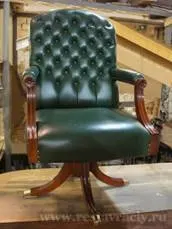
Открыть снимок у мастерской

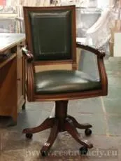
Открыть снимок у мастерской

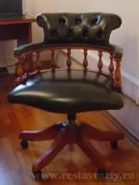
Открыть снимок у мастерской

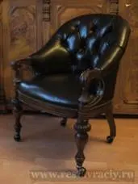
Открыть снимок у мастерской

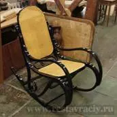
Открыть снимок у мастерской

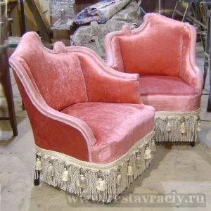
Открыть снимок у мастерской

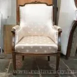
Открыть снимок у мастерской

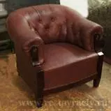
Открыть снимок у мастерской

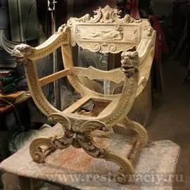
Открыть снимок у мастерской

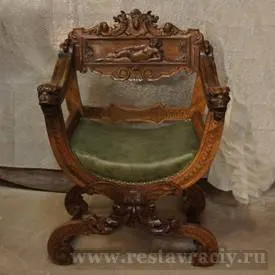
Открыть снимок у мастерской
Есть похожая вещь?
Подберите ракурсы для предварительной оценки.